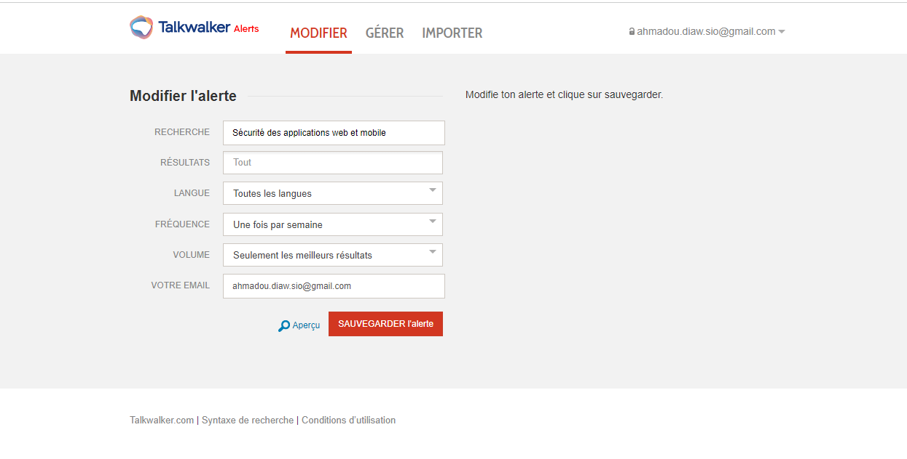

Mise en place de ma veille
Captures d'écran de mon environnement de veille technologique



×
❮
 ❯
❯
Dans un monde où les services numériques sont omniprésents, la sécurité des applications web et mobiles est devenue un enjeu critique. Qu’il s’agisse de la protection des données personnelles, des accès utilisateurs ou de la confidentialité des échanges, les risques liés aux cyberattaques sont croissants.
Dans le cadre de ma formation en BTS SIO option SLAM, et en lien avec mes projets réalisés en entreprise, j’ai mis en place une veille technologique axée sur la sécurisation des applications. Cette démarche m’a permis de suivre les évolutions des principales menaces (injections SQL, XSS, usurpation d'identité...), d’analyser les recommandations de l’OWASP, et de découvrir les bonnes pratiques de défense à adopter dès la conception d’un projet.
L’objectif de cette veille est de renforcer ma posture de développeur responsable en intégrant la sécurité dans toutes les phases du développement, tout en respectant les normes en vigueur comme le RGPD. Cette connaissance me permet aujourd’hui d’appliquer des mesures concrètes pour protéger les applications que je développe.
Captures d'écran de mon environnement de veille technologique
J'utilise des flux RSS et des alertes Talkwalker pour suivre :
Pour chaque menace identifiée, je documente :
Je centralise dans Microsoft Loop :
Extrait de ma base de connaissances sécurité
J'applique systématiquement :
Date de publication : 12 mars 2024
Lien : Lire l’article sur DualMedia
Cet article propose un panorama des menaces cyber actuelles et à venir, et détaille des solutions pour sécuriser efficacement vos sites web et applications mobiles :
Un guide complet pour structurer votre stratégie de cybersécurité web et mobile en 2024.
Date : 23 février 2025
Lien :
Lire l’article sur SavoirPlus
Cet article aborde les risques spécifiques aux smartphones et tablettes, et les bonnes pratiques à adopter pour sécuriser ses données personnelles.
Ce contenu offre une synthèse claire des dangers liés à l’usage des appareils mobiles et des conseils concrets pour éviter les compromissions de données.
Date de publication : 18 janvier 2025
Lien :
Lire l’article sur Capital.fr
Cet article du site Capital propose une série de recommandations concrètes pour améliorer la sécurité de son smartphone face aux menaces numériques. Il aborde les gestes essentiels à adopter pour se protéger du piratage.
L’auteur insiste également sur l’importance des gestes simples comme le verrouillage de l’écran, l’usage d’identifiants biométriques, et la prudence sur les réseaux sociaux. Ces pratiques renforcent la cybersécurité des utilisateurs au quotidien.
Lien : Lire l’article sur Metatrone
L’article identifie cinq menaces majeures auxquelles les entreprises doivent faire face aujourd’hui :
Cet article rappelle l’importance d’adopter une politique de sécurité proactive, d’effectuer des mises à jour régulières, et de former les utilisateurs.
Date de publication : 10 décembre 2024
Lien :
Lire l’article sur Verimatrix
Cet article propose un guide complet sur les tests de sécurité des applications web, essentiels pour se prémunir contre les cyberattaques. Il met en avant les étapes, les méthodes et les outils permettant de détecter et corriger les vulnérabilités critiques.
Il s'agit d'une ressource très utile pour tout développeur ou administrateur souhaitant intégrer la sécurité dès la conception des applications web et assurer une surveillance continue post-déploiement.
Date de publication : 3 décembre 2024
Lien :
Lire l’article sur Monsieur Crédit
Cet article traite des bonnes pratiques de sécurité pour les comptes en ligne, avec une attention particulière aux risques croissants de fraude bancaire mobile et de phishing.
L’article recommande une approche hybride combinant solutions techniques et bonnes pratiques personnelles pour sécuriser efficacement les comptes numériques.
Date : 30 septembre 2024
Lien :
Lire l’article sur KozakNet
Cet article explore les meilleures pratiques pour sécuriser les appareils mobiles dans un environnement numérique de plus en plus menacé :
En combinant comportements prudents, outils technologiques et vigilance continue, l’article rappelle que la sécurité mobile est une priorité incontournable dans un monde ultra-connecté.
Date : 14 septembre 2024
Lien :
Lire l’article sur Les-docus.com
Cet article dresse la liste des compétences essentielles pour s’épanouir dans les métiers du numérique en 2024 :
Un guide clair pour identifier les compétences à développer dans un monde numérique en évolution constante.
Date : 23 août 2024
Lien :
Lire l’article sur LeMagIT
Cet article détaillé explique pourquoi, malgré leur réputation, les iPhones restent vulnérables aux malwares et comment :
Cette veille m’a permis de comprendre en profondeur les enjeux de la cybersécurité dans le développement d’applications modernes. J’ai découvert les principales failles (XSS, injections SQL, erreurs d’authentification) et les bonnes pratiques proposées par l’OWASP pour les éviter.
En analysant régulièrement des articles spécialisés, j’ai développé une approche préventive de la sécurité dès la phase de conception d’une application. Cela m’aide aujourd’hui à anticiper les risques dans mes projets Laravel ou .NET MAUI, en adoptant des principes de sécurité « by design ».
Grâce à cette démarche, je me sens plus confiant face aux responsabilités du développeur en matière de protection des données, et j’ai acquis des réflexes techniques utiles dans un contexte professionnel.